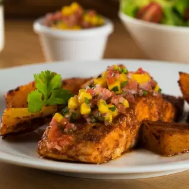

Chilaquiles

Birria

Huevos a la mexicana, Huevos revueltos con tomate, cebolla y chile

Molletes

Huevos divorciados

1 Kilo de Barbacoa
| Foto de los platillos | Descripcion | Precio |
|---|---|---|
|
Chilaquiles |
$35.80 |
|
Birria |
$34.00 |
|
Huevos a la mexicana, Huevos revueltos con tomate, cebolla y chile |
$55.00 |
|
Molletes |
$50.00 |
|
Huevos divorciados |
$30.00 |
|
1 Kilo de Barbacoa |
$515.00 |
| Foto de los platillos | Descripcion | Precio |
|---|---|---|
Este licuado es perfecto para los días calurosos, su sabor a almendra y mango te encantará. Tómalo en las mañanas y prepárate para disfrutar de un día lleno de vitalidad. |
$35.80 | |
Prueba este delicioso timbal de lomo de atún, con arroz blanco y un irresistible toque de mango, el cual le dará un toque muy tropical y delicioso. |
$34.00 | |
Esta deliciosa receta de gazpacho es ideal para una tarde de calor y para compartir con la familia, gracias a su deliciosa combinación de frutas como mango, piña, jícama y juego de naranja mezclado con chile y queso Cotija. ¡No puedes perderte esta tradicional receta moreliana! |
$55.00 | |
Se te hará agua la boca con esta rosca de fruta enchilada con mango, fresa, piña, kiwi y mucho chilito. Esta botana con frutas saludable es perfecta para cualquier ocasión, su sabor picosito te encantará. |
$50.00 | |
Michelada de Mango con Chamoy |
$30.00 | |
|  | En esta temporada de calor, prepara este delicioso salmón adobado con tres chiles acompañado de un fresco pico de gallo con mango que le da un sabor único y contrastante. Una comida completa y saludable, que además de colorida tiene un sabor inigualable. |
$5.00 |
| Foto de los platillos | Descripcion | Precio |
|---|---|---|
Vaso de agua refrescante con hielos |
$5.00 | |
 |
Vaso con coca-cola refrescante paara un dia caliente |
$20.00 |
Piña Colada |
$35.00 | |
Una copa de vino 100% Mexicano |
$30.00 | |
Un baso de tequila para andar bien aca con los amigos |
$40.00 | |
 |
Un vaso con la mas refrescantes de las aguas, la Horchata |
$55.00 |
| Foto de los platillos | Descripcion | Precio del platillo |
|---|---|---|
 |
pastel tres leches, churros, galletas, conchas, tamales, pan de elote, alfeñiques, arroz con leche, chongos zamoranos, cubiletes, puerquitos de piloncillo, ¡y para de contar |
$100.00 |
 |
Postre mexicano tres leches es un bizcocho remojado en lácteos, con un sublime toque etílico, que le da su distintivo sabor. |
$130.00 |
 |
Pan de elote mexicano es un postre muy esponjoso, algo fibroso, profundamente aromático y con cierta jugosidad. |
$70.00 |
 |
Cocadas mexicanas son unos dulces con forma de tambor o redondo, hechos con coco, agua de coco y azúcar o piloncillo (describiéndolas de forma muy purista). Este maravilloso majar, tiene su origen en la época colonial |
$50.00 |
 |
Postre mexicano con frutas cuya apariencia se asemeja mucho al dulce de membrillo, pues la receta original llegó con el Virreinato de la Nueva España, pero muy prontamente adquirió características propias, por el uso de productos autóctonos. |
$70.00 |
 |
No hay mejor forma de celebrar la Independencia de México que con un delicioso arroz con leche. Esta receta es extracremosa, por lo que te gustará aún más. |
$30.00 |
| Foto de los platillos | Descripcion | Precio del platillo |
|---|---|---|
 |
Si eres fanático de este tradicional platillo, este helado no te decepcionará. Una receta nacida en Atlixco, Puebla con los originales ingredientes del chile en nogada como la pera, manzana, carne de res y de cerdo, pasas, nuez y granada. Un postre muy original, pero sobre todo delicioso. |
$50.00 |
Déjate caer en la tentación con este exquisito helado, famoso por su característico sabor a queso fresco y vainilla. Su textura suave y ligera es ideal para esos días de calor en donde lo único que quieres es disfrutar de algo dulce, fresco y ligero. |
$30.00 | |
Perfecto para los amantes de los postres picositos y de los sabores fuertes. La combinación de sus ingredientes son simplemente una explosión gastronómica. |
$40.00 | |
Una excelente opción de postre para llevar a alguna reunión o simplemente después de haber comido un delicioso platillo mexicano. Si amas el tequila, no puedes dejar de probar este helado, la combinación entre el limón y el tequila es un sabor fuera de este mundo. |
$40.00 | |
 |
La bebida caída del cielo y la beneficiosa flor de Jamaica se fusionaron para explotar nuestros sentidos con este sabor sinigual. Ideal para esas noches de verano, en las que quieres probar algo nuevo y fresco. |
$50.00 |
Uno de los pastelitos favoritos de los mexicanos hecho helado, famoso por su relleno cremosito de mermelada y cubierta de chocolate. El helado de Gansito es ideal para las personas que aman los postres con fresas o los sabores frutales. Su sabor hará que sea tu nuevo helado preferido. |
$30.00 |